English
Mission Book
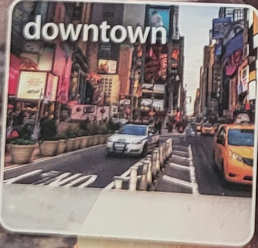
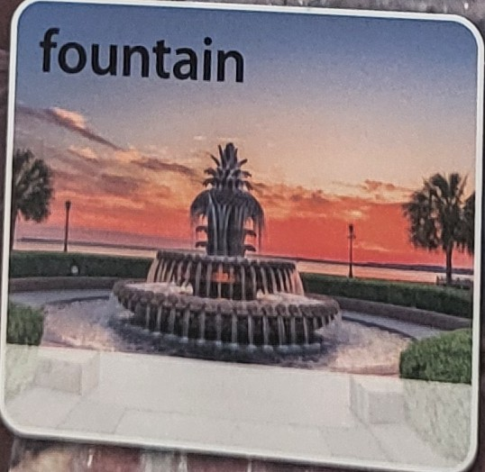
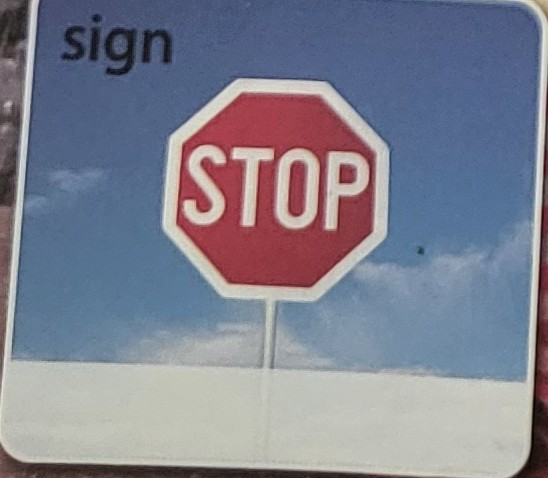
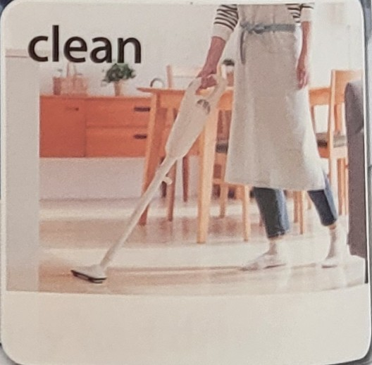
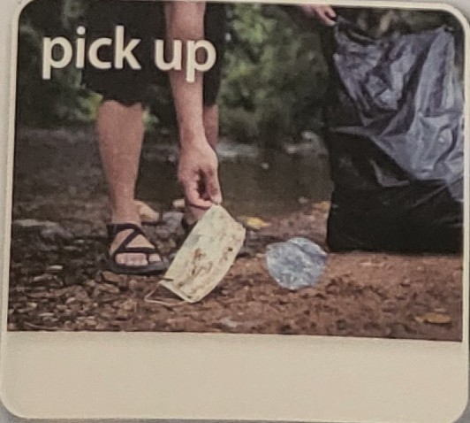
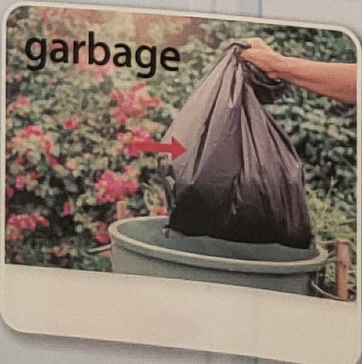
단어
사진 카드로 단어 익히고 단어 찾기·암호 풀기 게임!
숙어
단어끼리 짝을 이룬 덩어리 표현을 통째로 외우기!
표현
Did you ~? / be going to로 묻고 답하고 써 보기!
문장 이해
본문을 읽고, 풀고, 생각해서 말하기까지!
이렇게 공부해요
단어Word Hunter
Unit 7 · Have Fun Downtown사진을 보고 단어를 큰 소리로 3번 읽어요. 읽을 때마다 ① ② ③에 색칠! 아래 덩어리 표현도 같이 읽으면 더 잘 외워져요.
붐비는 시내
물 분수
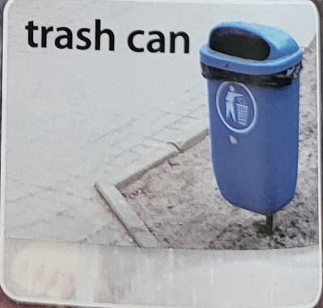
파란 쓰레기통
정지 표지판
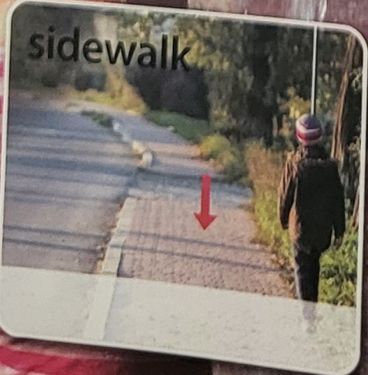
포장된 인도
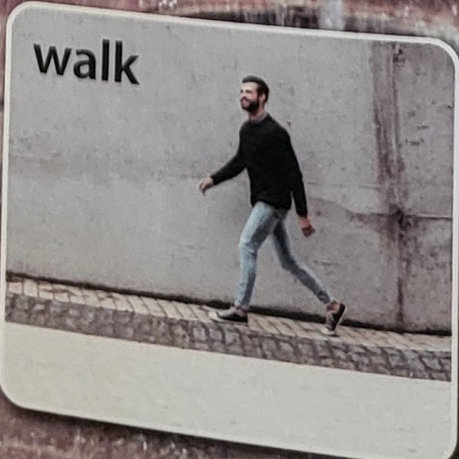
길을 걷다
STORY WORDS본문 속 단어 아는 단어는 □에 체크 ✔
단어Word Hunter
Unit 8 · Cleaning Our School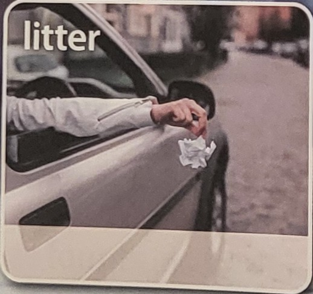
길에 쓰레기를 버리다
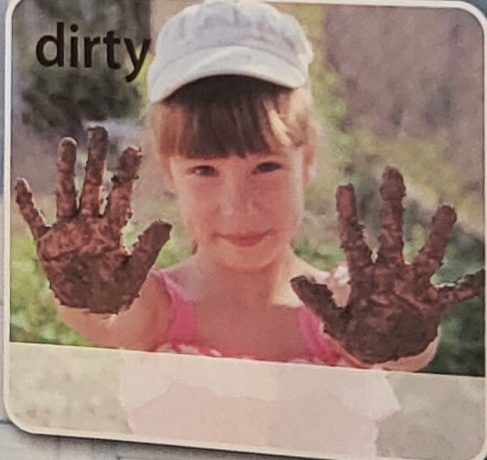
더러운 손
집을 청소하다
쓰레기를 줍다
쓰레기봉투
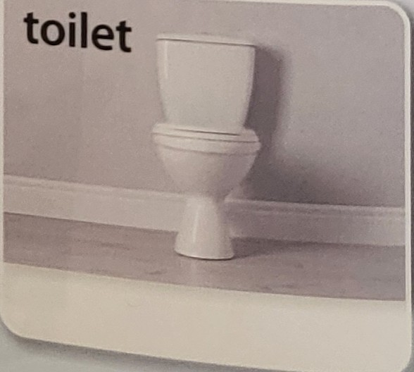
하얀 변기
MORE WORDS반대말 짝꿍 둘을 한 세트로 외워요
더러운 ↔ 깨끗한
지저분한 ↔ 깔끔한
떨어뜨리다 ↔ 줍다
STORY WORDS본문 속 단어 아는 단어는 □에 체크 ✔
단어변신! 과거형
Unit 7 · 8어제(yesterday) 한 일을 말할 때는 동사가 변신해요! Unit 7 본문은 전부 어제 있었던 일이라서 변신한 모양이 나와요.
CHECK변신 카드 왼쪽(지금) ➜ 오른쪽(어제)
🐾 꼬리 달기 변신 (+ed)
🎩 깜짝 변신 (모양이 확 바뀜!)
GAME 1변신시켜라! ( ) 안의 동사를 어제 모양으로 바꿔 쓰기
GAME 2그림 퀴즈 이름표가 가려졌어요! 첫 글자를 보고 단어를 써 보세요
단어Game Zone
Unit 7 · 8GAME 3단어 찾기 가로 ➡ 세로 ⬇ 대각선 ↘ 으로 숨어 있어요. 찾으면 동그라미 치고 오른쪽 빈칸에 써 보기!
| P | R | T | E | S | U | B | S | I | G | N | H |
| P | M | D | O | W | N | T | O | W | N | D | F |
| D | P | C | F | M | M | E | S | S | Y | G | B |
| L | I | I | S | O | W | G | O | G | U | A | L |
| T | C | R | C | I | U | S | M | P | R | R | N |
| C | T | L | T | K | D | N | S | O | S | B | U |
| E | O | I | E | Y | U | E | T | N | I | A | I |
| B | I | T | R | A | L | P | W | A | T | G | K |
| R | L | T | T | O | N | L | K | A | I | E | K |
| U | E | E | W | A | L | K | E | O | L | N | R |
| N | T | R | A | S | H | C | A | N | T | K | R |
| U | T | L | Y | E | C | C | N | E | A | T | U |
- 🏙️시내d
- ⛲분수f
- 🗑️쓰레기통t
- 🚶인도s
- 🛍️쓰레기g
- 🚯함부로 버리다l
- 🚽변기t
- 🤲줍다p
- 😖더러운d
- ✨깨끗한c
- 🌪️지저분한m
- 🛑표지판s
- 👟걷다w
- 👌깔끔한n
GAME 4뒤죽박죽 글자 섞인 글자를 바르게 고쳐 쓰기
GAME 5비밀 암호 숫자를 글자로 바꾸면 비밀 메시지가 나타나요
숙어Chunk Master
Unit 7 · Have Fun Downtown숙어는 단어들이 손잡고 다니는 덩어리예요. 하나씩 떼지 말고 통째로 읽고 외워요. 아래 문장은 모두 교과서 본문에 나온 문장!
REAL MISSION오늘의 생활 미션 해냈으면 □에 체크 ✔
QUICK QUIZ이모지 퀴즈 위 카드를 손으로 가리고, 그림만 보고 숙어 쓰기
숙어Chunk Master
Unit 8 · Cleaning Our School~ 자리에는 다른 말이 쏙 들어가요. keep the school neat, keep my room neat, keep our town clean 처럼 바꿔 말해 보세요!
숙어Game Zone
Unit 7 · 8GAME 1짝꿍 단어 찾기 상자에서 알맞은 단어를 골라 덩어리를 완성하기
GAME 2반쪽 찾기 점과 점을 선으로 이어 숙어를 완성하기
GAME 3빈칸 채우기 우리말 뜻을 보고 숙어를 넣어 문장 완성하기
표현Did you ~ ?
Unit 7 핵심 표현PATTERN 1지난 일을 물어볼 때
Did you have fun?재미있었어?
Yes, we did.응, 재미있었어.
Did you visit the new fountain there?거기 새 분수에 가 봤어?
Sure, we did.물론 갔지.
Did you throw away your trash?쓰레기는 버렸어?
Of course!물론이지!
Did you ride your bikes on the sidewalks?인도에서 자전거를 탔어?
No, we didn’t.아니, 안 탔어.
조심!Did 뒤에는 변신 전 모양 Did가 이미 “어제 일”이라고 알려 주니까 동사는 변신 안 해요
대답누구에 대해 물었는지 보고 대답해요 didn’t = did not
Yes, I did.
No, I didn’t.
Yes, we did.
No, we didn’t.
Yes, he did.
No, he didn’t.
Yes, they did.
No, they didn’t.
WRITING질문으로 바꿔 쓰기 Did로 시작하고, 동사는 원래 모양으로!
표현be going to
Unit 8 핵심 표현PATTERN 2앞으로 할 일을 말할 때
They’re going to clean it themselves!그들은 그것을 직접 청소할 거예요!
Students are going to be neat outside school.학생들은 학교 밖에서도 깔끔할 거예요.
We’re going to keep our town clean!우리는 우리 동네를 깨끗하게 지킬 거예요!
줄임말짧게 줄여서 말해요
I’m going to ~
We’re going to ~
They’re going to ~
You’re going to ~
GAME문장 탐정 🕵️ 둘 중 맞는 것에 동그라미!
WRITING블록을 바르게 놓아 문장 쓰기
표현Signs & Speaking
Unit 7 · 8PATTERN 3Do not ~ “~하지 마시오” · 표지판에 쓰는 말 (Do not = Don’t)
REACTION맞장구 표현 대답할 때 쓰면 훨씬 자연스러워요
SPEAKINGAbout You 인터뷰 🎤 내 이야기로 대답을 쓰고, 안 보고 말해 보기
문장 이해Story Detective
Unit 7 · Have Fun DowntownMAIN IDEAWhat is the story about? 이 이야기는 무엇에 관한 이야기일까요? 하나만 ✔
문장 이해Quiz Time
Unit 7 · Have Fun DowntownQ1일어난 순서대로 1–4 쓰기
Q2True or False
Q3질문에 영어로 답하기 본문에서 답을 찾아 빈칸을 채워요
Q4요약문 완성하기 상자에서 골라 쓰기
John and Dan went yesterday. They played in the fountain and got really . Then, they had drinks and snacks. They threw their trash in the . They saw “Do Not Litter” everywhere. They didn’t ride their bikes on the sidewalks. It’s against the . So they instead.
문장 이해Story Detective
Unit 8 · Cleaning Our School문단 요약 ① 어떤 학교는 쓰레기 때문에 더러워요 ➜ ② 일본 학교는 학생들이 매일 청소해요 ➜ ③ 그래서 학교를 깔끔하게 써요
문장 이해Quiz Time
Unit 8 · Cleaning Our SchoolQ1어느 학교 이야기일까? 어떤 학교(Some schools)는 S, 일본 학교(Japan)는 J 를 ○ 안에 쓰기
Q2True or False
Q3일본 학생들이 청소하는 곳에 ✔
힌트: 본문 ② 문단을 다시 읽어 보세요. 본문에 없는 것이 2개 섞여 있어요!
Q4질문에 영어로 답하기
Q5요약문 완성하기 상자에서 골라 쓰기
In some schools, students everywhere. This makes the school . In Japan, schools aren’t dirty. Students clean their schools . They even clean the . Teachers help, too. Students in Japan don’t make their school and dirty. They keep the school .
문장 이해생각하고 말하기
Speaking 실전본문을 통째로 외우지 않아도 괜찮아요. 그림과 힌트 단어를 보고 내용을 떠올려서 말하면 돼요. 크게 · 천천히 · 틀려도 멈추지 말기!
STORY MAP 1Have Fun Downtown 내가 Dan이 되어 “John and I ~ / We ~”로 말하기
STORY MAP 2Cleaning Our School 문단 3개를 차례로 떠올리며 말하기
어떤 학교
일본 학교
깔끔한 습관
MY OPINION내 생각 한 문장 더하기 말하기 끝에 붙이면 멋져요
노래로 외우기Keep It Clean!
Unit 8 · p.69 · TR 20교재 음원(TR 20)을 틀고 따라 불러요. 노래 속에 Stage 1–3에서 배운 단어·숙어·표현이 다 들어 있어요. 몇 개나 찾을 수 있을까요?
♪ VERSE 1
When you’re walking on the sidewalk,인도를 걸을 때는
Look all around.주위를 잘 둘러봐.
Is garbage all inside the trash can?쓰레기가 모두 쓰레기통 안에 있니?
Or is some on the ground?아니면 땅에 떨어져 있니?
If it’s on the ground,땅에 떨어져 있다면
You know what to do!어떻게 해야 할지 알지!
Just pick it up!그냥 주우면 돼!
♪ VERSE 2
When you’re riding in the car,차를 타고 갈 때
Having a snack.간식을 먹고 있다면
Don’t throw the bag out of the window!봉지를 창밖으로 던지지 마!
Be sure to bring it back.꼭 다시 가져와.
When you take it home,집에 가져가면
You know what to do!어떻게 해야 할지 알지!
Put it in the trash can!쓰레기통에 넣어!
♪ CHORUS (후렴)
Keep it clean! Keep it clean!깨끗하게 지키자! 깨끗하게 지키자!
We want to do our part!우리도 우리 몫을 하고 싶어!
So now, let’s start!자, 이제 시작하자!
We’re going to keep our town clean!우리는 우리 동네를 깨끗하게 지킬 거야!
GAME가사 빈칸 채우기 위 가사를 가리고 도전!
실전 쓰기Final Mission
Writing 실전WRITING TEST우리말을 보고 영어 문장 쓰기 첫 단어는 힌트! 대문자로 시작하고 끝에 . ? ! 잊지 않기
SELF CHECK나에게 별점 주기 잘한 만큼 별에 색칠
☆☆☆
☆☆☆
☆☆☆
☆☆☆
🏆 MISSION CLEAR 🏆
은(는) Unit 7·8의 모든 미션을 끝까지 해냈으므로 이 상장을 드립니다.
정답다 풀고 나서 확인해요 🙃
Unit 7 · 8p.4변신시켜라!
1. went 2. played 3. got 4. had 5. threw 6. saw 7. walkedp.4그림 퀴즈
fountain · trash can · walk · dirty · garbage · pick upp.5단어 찾기
| P | R | T | E | S | U | B | S | I | G | N | H |
| P | M | D | O | W | N | T | O | W | N | D | F |
| D | P | C | F | M | M | E | S | S | Y | G | B |
| L | I | I | S | O | W | G | O | G | U | A | L |
| T | C | R | C | I | U | S | M | P | R | R | N |
| C | T | L | T | K | D | N | S | O | S | B | U |
| E | O | I | E | Y | U | E | T | N | I | A | I |
| B | I | T | R | A | L | P | W | A | T | G | K |
| R | L | T | T | O | N | L | K | A | I | E | K |
| U | E | E | W | A | L | K | E | O | L | N | R |
| N | T | R | A | S | H | C | A | N | T | K | R |
| U | T | L | Y | E | C | C | N | E | A | T | U |
p.5뒤죽박죽 글자
1. downtown · 2. fountain · 3. sidewalk · 4. trash can · 5. sign · 6. garbage · 7. toilet · 8. messyp.5비밀 암호
KEEP IT CLEAN / DO NOT LITTERp.6이모지 퀴즈
get wet · ride a bike · of course · throw away · against the law · have funp.8짝꿍 단어 찾기
1. downtown 2. fountain 3. trash can 4. sign 5. sidewalk 6. walk 7. litter 8. dirty 9. clean 10. pick 11. garbage 12. toiletp.8반쪽 찾기
have fun · throw away · get wet · pick up · against the law · of course · every dayp.8빈칸 채우기
1. had, time 2. throw away 3. against, law 4. pick up 5. keep, neat 6. do, partp.9질문으로 바꿔 쓰기
1. Did you visit the new fountain?2. Did they throw away their trash?
3. Did Dan have fun?
p.10문장 탐정
1. going 2. be 3. We’re 4. clean 5. are goingp.10블록 문장 쓰기
1. They’re going to clean it themselves!2. Students are going to be neat outside school.
3. 예) I’m going to clean my desk.
p.12Main Idea
having fun downtown (분수는 시내에서 한 일 중 하나예요)p.13Unit 7 Quiz
Q1 위에서부터 3 – 1 – 4 – 2Q2 1. F (John과 갔어요) 2. T 3. F (in the trash can) 4. T
Q3 1. John, Dan 2. played 3. Do Not Litter 4. against the law
Q4 1. downtown 2. wet 3. trash can 4. signs 5. law 6. walked
p.15Unit 8 Quiz
Q1 왼쪽 줄 S – J – S / 오른쪽 줄 J – S – JQ2 1. T 2. F (Teachers help, too.) 3. F (in the trash can) 4. T
Q3 windows, desks, boards, floors, toilets (fountains, cars는 ✗)
Q4 1. every day 2. trash can 3. neat
Q5 1. litter 2. dirty 3. every day 4. toilets 5. messy 6. neat
p.17가사 빈칸 채우기
1. pick, up 2. trash can 3. part 4. going top.18실전 쓰기
1. Did you have fun?2. Did you ride your bikes on the sidewalks?
3. We had a good time.
4. We threw our trash in the trash can.
5. They’re going to clean it themselves!
6. Students are going to be neat outside school.
7. Students clean their schools every day.
8. They keep the school neat.